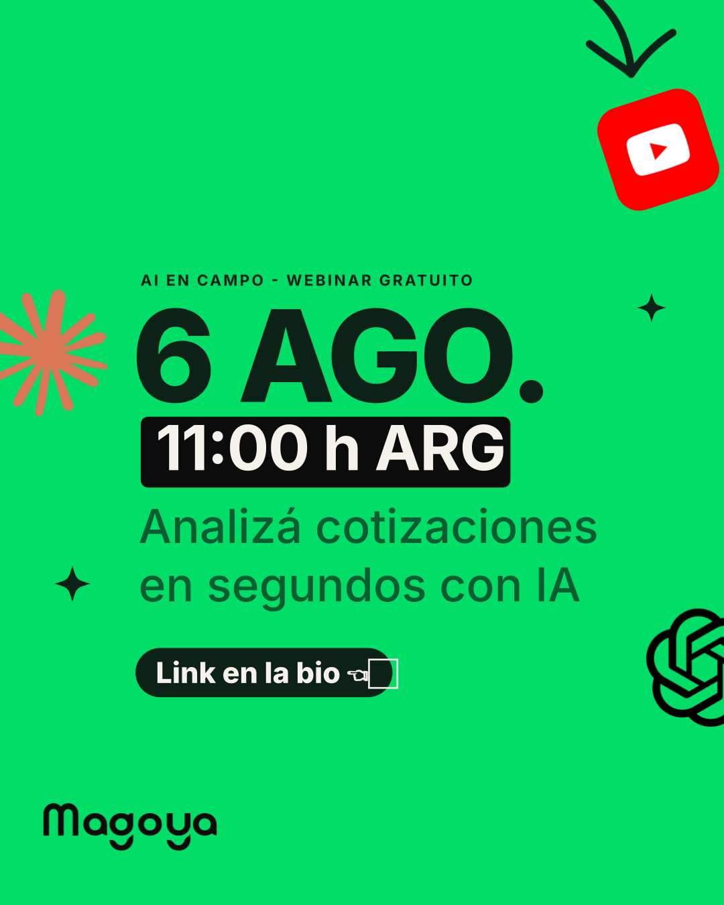
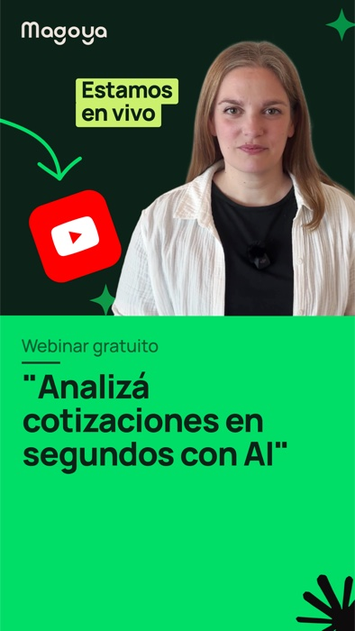
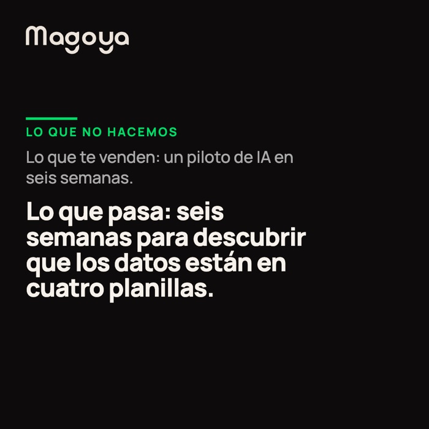
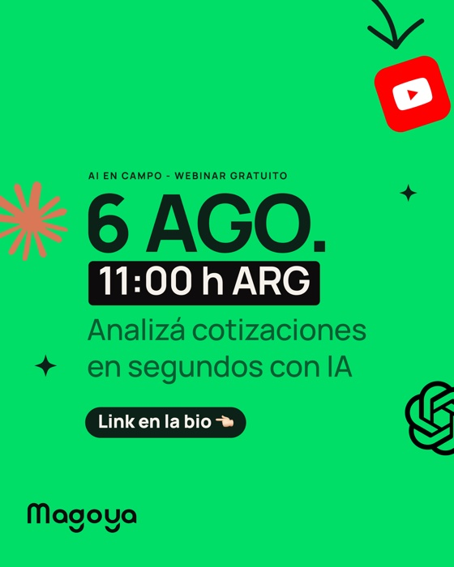

Educar sobre IA, con los pies en el lote
AI en campo existe para un solo trabajo: que el productor y el técnico agro entiendan y usen IA en su día a día. El contenido responde preguntas reales (“¿qué le pregunto a la IA sobre mi lote?”), muestra herramientas concretas y anuncia webinars. Es la voz de canal de redes de Magoya — cuando la pieza es institucional (clientes, ventas, employer brand), se usa el core.
Verde pleno, placa negra, voseo
La sub-marca rompe tres reglas del core a propósito — y solo estas tres. Todo lo demás (Manrope, wordmark intocable, logos reales) sigue igual.
La pieza patrón — anatomía

Pieza real, exportada del Studio: template fecha-marcada · formato ig-portrait (1080×1350). Es la referencia de la línea — cualquier pieza nueva se compara con esta.
| Nivel | Especificación |
|---|---|
| Kicker | 800 · +14% tracking · MAYÚSCULAS · verde profundo · nombre de la línea + tipo de pieza |
| Display | 800 · −4% tracking · negro · el dato que trae al lector (fecha, cifra) — ocupa ~70% del ancho |
| Placa | fondo negro + texto crema · el dato operativo (hora, plazo) · una sola por pieza |
| Bajada | 500 · verde profundo · la promesa concreta, 6–10 palabras |
| CTA | pill verde profundo o negra + texto crema + una manito que señala (👈 👉 👇) · opcional (puede ir en el copy). Es la única familia de emoji permitida, junto con las banderas |
| Firma | lockup AI en campo · por Magoya abajo-izquierda (ver sección Logo) — reemplaza al wordmark solo en piezas de esta sub-marca |
| Ruido | 2–4 elementos en las esquinas, rotación ±5–15° · nunca sobre el texto |
La voz
Voseo argentino, didáctica y directa: “Analizá”, “Usá Claude o ChatGPT”, “Che, ¿con qué IA armo informes?”. Preguntas reales del productor como ancla. Emojis con criterio: uno por CTA (👈 ), nunca lluvia. Sin jerga corporativa — acá no hay “soluciones end-to-end”, hay “te muestro cómo”.
El lockup de AI en campo
Todas las piezas de esta sub-marca llevan este lockup abajo-izquierda en vez del wordmark de Magoya solo. El garabato es el mismo lenguaje de las marcas a mano del core, pero en este único tamaño, pegado al texto — nunca suelto y grande como estallido decorativo en una esquina.
#161616 sobre lienzo claro (verde pleno, crema) · crema #ECE3DB sobre placa negra.font-mono, mayúsculas, más chico — es la firma, no el título.Asset del mark: assets/studio/mark-ai-campo.svg (mask, recoloreable). El lockup en sí no es una imagen — se compone con Manrope viva (800, tracking −2%) para que nunca pierda nitidez en ningún tamaño de exportación.
Los elementos del Studio
Estos son los assets reales que usa Magoya Studio para producir las piezas — los mismos archivos, sin versiones paralelas. Los doodles son monocromos y se tiñen; los logos de IA y redes van en su color oficial.
Doodles & flourishes — monocromos, recoloreables
Badge EN VIVO — para reels y webinars en directo
El SVG viene con fill="currentColor": se pinta del color que le pases (por eso no se ve si se inserta suelto como imagen). En el manual va por CSS mask; en el Studio entra al pipeline de teñido.
Logos de IA — los 10, en su color oficial
Cuando la pieza habla de IA, los logos de las herramientas van en su color de marca (no monocromos): así se reconocen al instante. Tamaño chico, apenas rotados, nunca protagonistas del mensaje. Uso nominativo — hablamos DE esas herramientas. Cada logo se descarga en 4 variantes: SVG color · SVG negro · PNG con contenedor color · PNG con contenedor negro.
Logos de redes
Los 13 de assets/studio/icons/social/, en su color oficial. En tile de color (como el de YouTube en la pieza) o glifo suelto. Magoya publica en LinkedIn, Instagram, YouTube y WhatsApp — el resto está para cuando la pieza hable de esas plataformas, no para armar una fila de íconos de redes en el pie.
Íconos agro
Set completo de 16 en el brand book.
Cómo se cuenta la historia
Esto no es una galería: es el arco narrativo que hace que un carrusel de AI en campo enseñe algo. Si el orden se rompe, la pieza se ve linda y no comunica. 4 a 6 slides, una idea por slide.
La pregunta que te hacen, textual, en boca del productor. Nunca abrir con la solución ni con la marca.
impacto-preguntaQué IA usar y cómo se le habla. Acá van los logos en su color y el prompt real.
whatsapp · impacto-appsUna cifra o una captura del resultado. Sin prueba, el carrusel es opinión.
impacto-cifra · impacto-pantallaUna sola acción. Es la única slide que puede ir en verde profundo.
carrusel-cierreRitmo de color en el carrusel
El lienzo no es del mismo color en todas las slides: abre y cierra en verde pleno (la marca del arranque y del cierre), y el medio pasa a crema Magoya para que el ojo distinga "estoy en el desarrollo". Sin esto, un carrusel de 6 slides verdes se lee como una sola pieza repetida, no como un recorrido.
- Una idea por slide · 4 a 6 slides · el arco completo aunque sea corto.
- La pregunta del slide 1, textual de un productor real.
- Verde pleno en la primera y la última slide, crema Magoya en el medio.
- Comillas tipográficas consistentes (“ ”) en todas las citas de la pieza — nunca mezclar con comillas rectas.
- Producir desde la plantilla que ya existe en el Studio.
- Abrir con la solución o con la marca — se pierde el enganche.
- Carruseles de 10 slides: si no entra en 6, son dos posteos.
- Cerrar sin acción, o con tres acciones distintas.
- Numerar las slides ("1/6", "2/6"…) — el arco y el swipe ya lo comunican.
- Formato cuadrado 1080×1080 para carruseles: Instagram lo dejó de privilegiar, el formato madre es 4:5.
Qué plantilla usar
Las piezas no se arman a mano: se elige la plantilla en el Studio y se cambia texto y foto. Lo que hay que saber como marca es cuál usar según el objetivo — cada tarjeta abre la galería.

La pregunta real del productor: el ancla educativa de la serie.
Abrir en el Studio →
Mito vs realidad — el formato de más engagement en LinkedIn B2B.
Abrir en el Studio →
La fecha grande con círculo a mano. También cuenta-regresiva.
Abrir en el Studio →Muestra la conversación real y los logos de IA en su color.
Abrir en el Studio →Cifra gigante o captura del producto: la prueba.
Abrir en el Studio →Fecha, hora, oradores y CTA en una sola pieza.
Abrir en el Studio →Tres fotos rotadas con destellos.
Abrir en el Studio →Titular enorme + persona a la derecha (1280×720).
Abrir en el Studio →La galería del Studio está ordenada por objetivo: primero lo que educa y prueba, “en blanco” al final. Arrancar en blanco es donde se rompe la marca — si hay plantilla que sirve, se usa esa. Son 28 en total.
Los 13 formatos de red
Toda plantilla se exporta a cualquier formato — el Studio maneja las zonas seguras. Formato madre de AI en campo: carrusel retrato 4:5.
| Red | Formato | Medidas |
|---|---|---|
| Post retrato 4:5 (carrusel) | 1080 × 1350 | |
| Post cuadrado | 1080 × 1080 | |
| Story / Reel 9:16 | 1080 × 1920 | |
| Carrusel (retrato) | 1080 × 1350 | |
| Post cuadrado | 1200 × 1200 | |
| Post horizontal | 1200 × 627 | |
| Estado 9:16 | 1080 × 1920 | |
| Post | 1200 × 630 | |
| Story 9:16 | 1080 × 1920 | |
| X / Twitter | Post 16:9 | 1600 × 900 |
| YouTube | Miniatura | 1280 × 720 |
| Genérico | Presentación 16:9 | 1920 × 1080 |
| Genérico | Clásico 4:3 | 1600 × 1200 |
Qué rompe y qué no
assets/studio/): 2–4 por pieza, ±5–15°, en las esquinas.